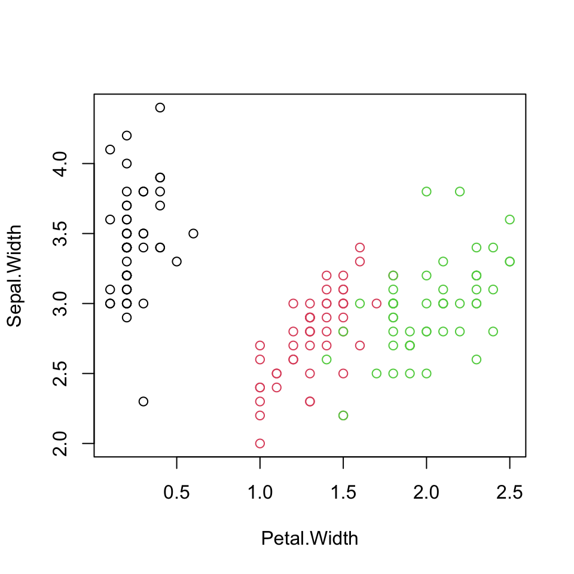
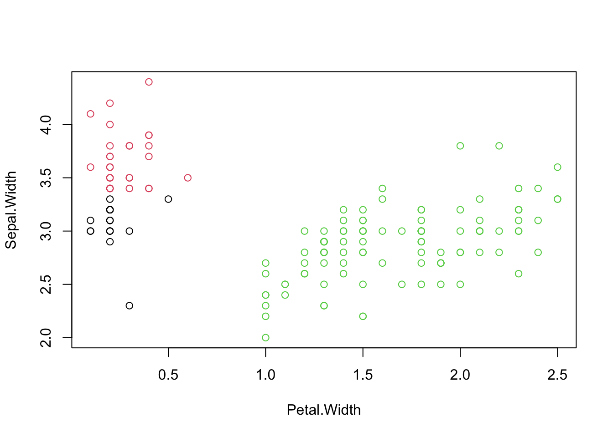
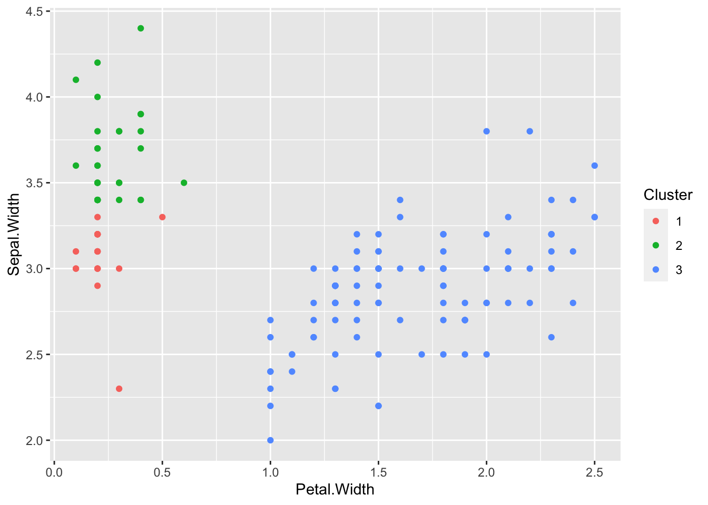
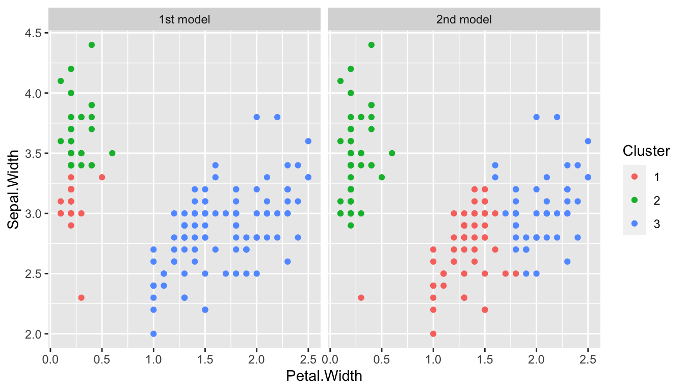
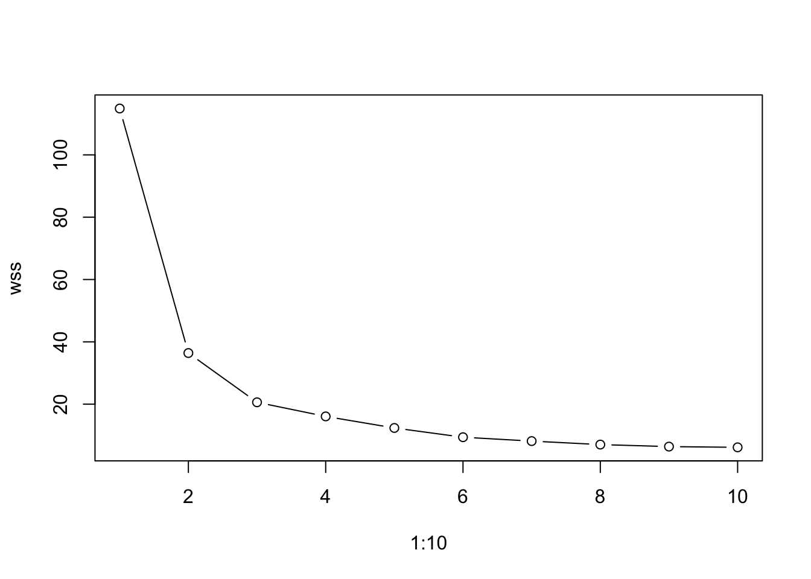
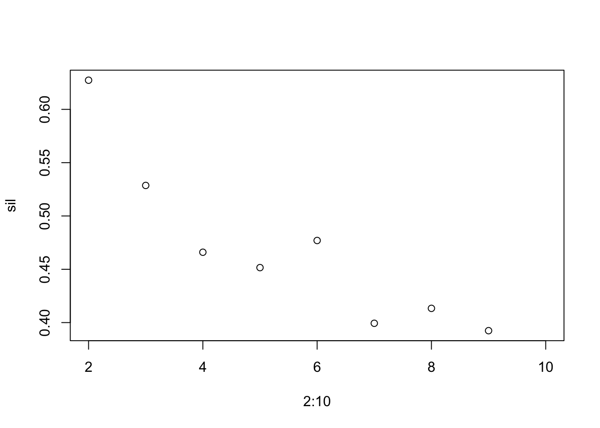
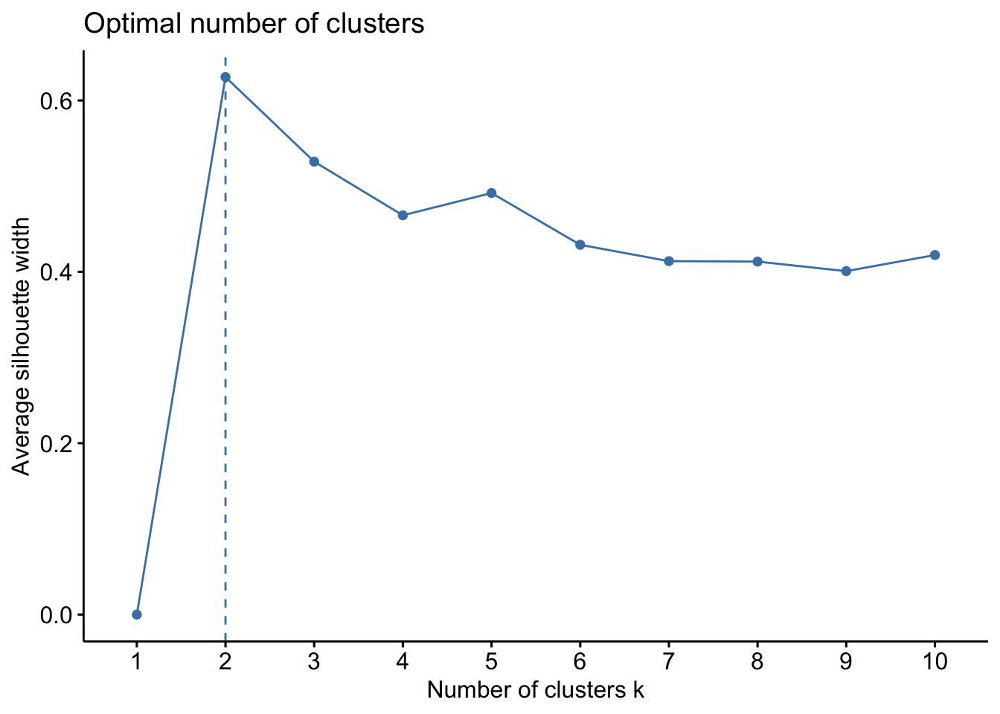

Exercise 1
Using Edgar Anderson’s iris data, we will investigate K-means
clustering. The data is stored in iris in R. Here we focus
on Sepal.Width and Petal.Width.

- Examine the contents and data types of the data set iris.
str(iris)## 'data.frame': 150 obs. of 5 variables:
## $ Sepal.Length: num 5.1 4.9 4.7 4.6 5 5.4 4.6 5 4.4 4.9 ...
## $ Sepal.Width : num 3.5 3 3.2 3.1 3.6 3.9 3.4 3.4 2.9 3.1 ...
## $ Petal.Length: num 1.4 1.4 1.3 1.5 1.4 1.7 1.4 1.5 1.4 1.5 ...
## $ Petal.Width : num 0.2 0.2 0.2 0.2 0.2 0.4 0.3 0.2 0.2 0.1 ...
## $ Species : Factor w/ 3 levels "setosa","versicolor",..: 1 1 1 1 1 1 1 1 1 1 ...summary(iris)## Sepal.Length Sepal.Width Petal.Length Petal.Width
## Min. :4.300 Min. :2.000 Min. :1.000 Min. :0.100
## 1st Qu.:5.100 1st Qu.:2.800 1st Qu.:1.600 1st Qu.:0.300
## Median :5.800 Median :3.000 Median :4.350 Median :1.300
## Mean :5.843 Mean :3.057 Mean :3.758 Mean :1.199
## 3rd Qu.:6.400 3rd Qu.:3.300 3rd Qu.:5.100 3rd Qu.:1.800
## Max. :7.900 Max. :4.400 Max. :6.900 Max. :2.500
## Species
## setosa :50
## versicolor:50
## virginica :50
##
##
## plot(Sepal.Width ~ Petal.Width, iris, col = Species)
df0 <- iris[, c('Sepal.Width', 'Petal.Width')]- Try to find three clusters in the data of sepal and petal widths
using a k-means algorithm. You can use the function
kmeansin R. It allows to choose an algorithm with the argumentalgorithm(e.g.algorithm = "Forgy").
## Number of clusters
n_clust <- 3
## k-means with k = 3 and Forgy's algorithm
km <- kmeans(df0, centers = n_clust, algorithm = "Forgy")
## k-means with k = 3 and Hartigan and Wong's algorithm (as the default)
km <- kmeans(df0, centers = n_clust)- Plot the data and color by cluster ID
df <- df0
## The cluster identities are stored in km$cluster, same order as input
df$Cluster <- factor(km$cluster)
## Plot using base R graphics
plot(Sepal.Width ~ Petal.Width, df, col = Cluster)
## alternatively, plot using ggplot
ggplot(df, aes(Petal.Width, Sepal.Width, color = Cluster)) +
geom_point()
- Repeat the same analysis a few times. Do you get the same clusters
all the time? Use
tableto check it allowing different cluster numbers.
## the same analysis
km2 <- kmeans(df0, centers = n_clust)
## Compare the results. Note cluster numbers can be changed.
table(km$cluster, km2$cluster)##
## 1 2 3
## 1 1 18 0
## 2 0 31 0
## 3 52 0 48## Visualize the difference
if(sum(table(km$cluster, km2$cluster) > 0) != n_clust) { # different
df2 <- df0
df2$Cluster <- factor(km2$cluster)
df$model <- "1st model"
df2$model <- "2nd model"
df3 <- rbind(df, df2)
ggplot(df3, aes(Petal.Width, Sepal.Width, color = Cluster)) +
geom_point() +
facet_grid(~ model)
}
- Try the argument
nstartout and compare how stable two runs are. By setting the argument to 4, the algorithm will automatically try four different (random) starting points.
km3.1 <- kmeans(df0, centers = n_clust, nstart = 4)
km3.2 <- kmeans(df0, centers = n_clust, nstart = 4)
table(km3.1$cluster, km3.2$cluster)##
## 1 2 3
## 1 0 49 0
## 2 0 0 53
## 3 48 0 0- Try different values for \(k\), run
the k-means algorithm and collect the WSS (
tot.withinss). Plot WSS vs \(k\). The WSS is always decreasing as \(k\) increases, but the curve can still give you a hint of which \(k\) to choose. The Elbow method for selecting \(k\) is to look at this curve and choose the \(k\) that you find at the bend of the curve, at the ‘elbow’. Which \(k\) would you pick based on this?
wss <- sapply(1:10, function(k) kmeans(df0, centers = k, nstart = 4)$tot.withinss)
plot(1:10, wss, type = "b")
- Compute the Silhouette width of the first object (or observation) when \(k\) is 2.
k <- 2
cl <- kmeans(df0, k)$cluster
## Euclidean distances
d <- sapply(1:nrow(df0), function(ii) sqrt(sum((df0[1, ] - df0[ii, ])^2)))
## a_i = 1 / (|Ca| - 1) * sum(d(i, j)) in the same cluster Ca
ai <- sum(d[cl == cl[1]]) / (sum(cl == cl[1]) - 1)
## other cluster IDs
other_cl <- unique(cl[cl != cl[1]])
## b_i = min( mean(d(i, Cb)) ) average distance to another cluster Cb
bi <- min(sapply(other_cl, function(ocl) mean(d[cl == ocl])))
si <- (bi - ai) / max(ai, bi)
print(si)## [1] 0.8001702- (Optional) Compute average Silhouette width of all objects adjusting
\(k\) from 2 to 10 and choose optimal
\(k\). Euclidean distance can be
computed by
dist. Check the help of the function using?dist.
n <- nrow(df0)
dm <- as.matrix(dist(df0)) # matrix output for row wise analysis
sil <- sapply(2:10, function(k) {
cl <- kmeans(df0, k)$cluster
si <- sapply(1:n, function(ii) {
## a_i = 1 / (|Ca| - 1) * sum(d(i, j)) in the same cluster Ca
ai <- sum(dm[ii, cl == cl[ii]]) / (sum(cl == cl[ii]) - 1)
## other cluster IDs
other_cl <- unique(cl[cl != cl[ii]])
## b_i = min( mean(d(i, Cb)) ) average distance to another cluster Cb
bi <- min(sapply(other_cl, function(ocl) mean(dm[ii, cl == ocl])))
## s_i
(bi - ai) / max(ai, bi)
})
mean(si)
})
print(sil)## [1] 0.6273425 0.5286392 0.4659839 0.4515611 0.4769964 0.3993389 0.4133418
## [8] 0.3924118 NaNplot(2:10, sil)
- (Optional) Try
fviz_nbclustof the R-packagefactoextraand choose optimal \(k\) based on average Silhouette width.
# install.packages("factoextra") # if the package was not installed before
factoextra::fviz_nbclust(df0, kmeans, method="sil")